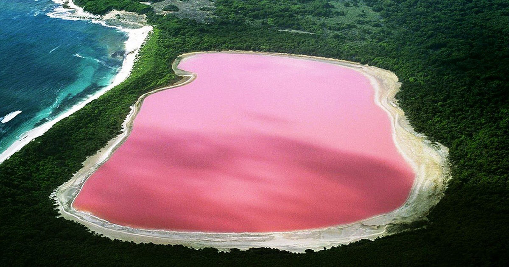
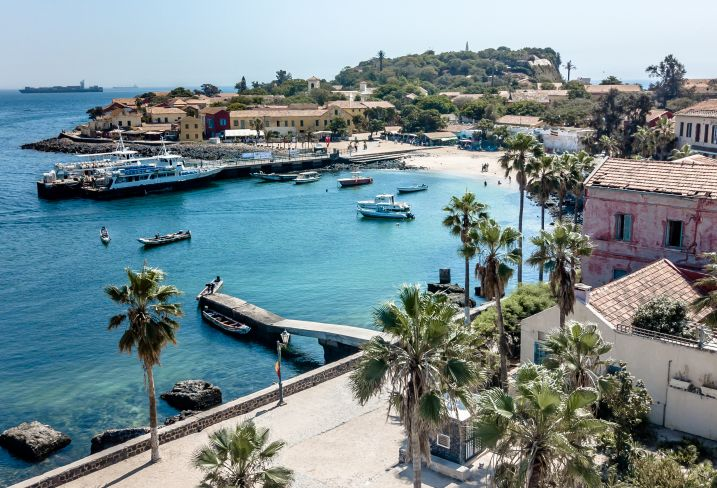
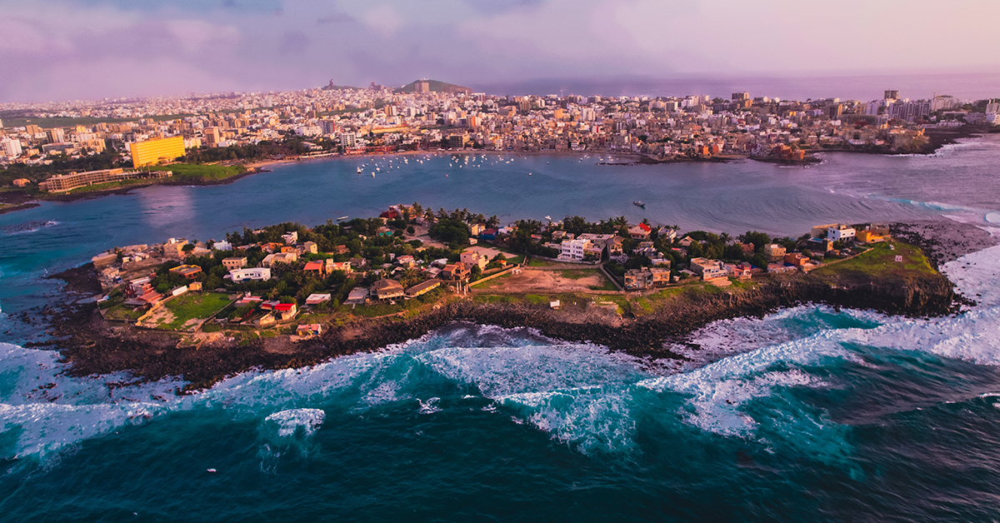
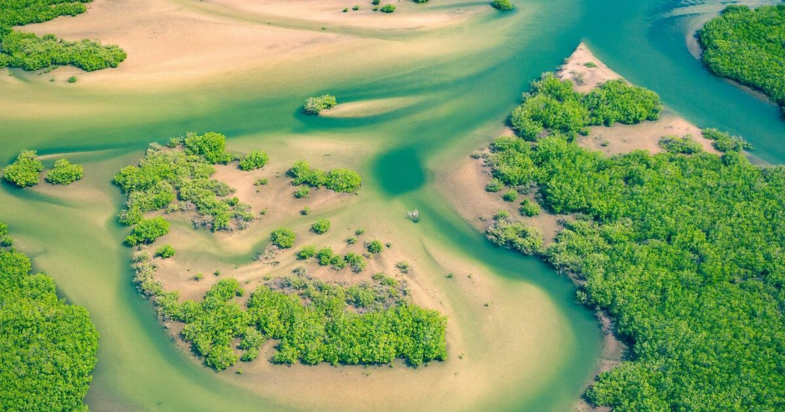
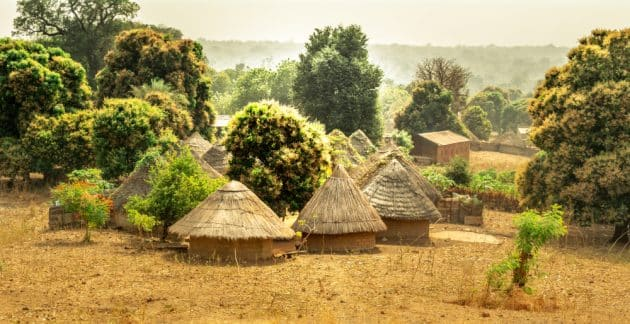

Le Sénégal, situé à l'extrémité ouest de l'Afrique, est une destination enchanteresse qui saura vous captiver par sa diversité culturelle, sa richesse naturelle, et son hospitalité chaleureuse. Dès que vous foulerez le sol sénégalais, vous serez baigné dans une atmosphère vibrante de musique, de danse et de couleurs. Le pays est un melting-pot de cultures africaines, arabes et européennes, ce qui se reflète dans sa cuisine délicieuse et ses festivals animés. Le Sénégal offre une palette de paysages à couper le souffle, allant des plages de sable doré aux étendues désertiques du Sahara, en passant par les parcs nationaux où vous pourrez observer une faune diversifiée, notamment des lions, des éléphants et des oiseaux exotiques. Le fleuve Sénégal traverse le pays, offrant d'innombrables possibilités d'aventures en pirogue et en croisières. Pour les amateurs d'histoire, l'île de Gorée est un lieu incontournable, rappelant le sombre passé de la traite négrière. Le Sénégal est également célèbre pour sa tolérance religieuse et son esprit de convivialité, faisant de votre voyage une expérience inoubliable empreinte de découvertes, de partage et de joie. Alors, laissez-vous emporter par la magie du Sénégal, une terre de contraste où tradition et modernité se côtoient harmonieusement. Vous ne pourrez qu'aspirer à y retourner dès que possible..
    